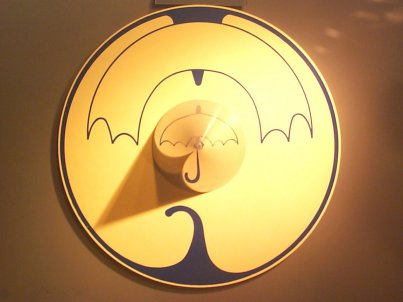

ART OF ANAMORPHOSIS
Gallery
Vauxhall station mural, Vauxhall, London (William Pye, 1986-2002)
St Peter's Riverside sculpture, Sunderland (Colin Wilbourn, 1997)

"Sténopé" exhibition, Cité des Sciences et de l'Industrie, Paris
Reflection!
by
Andrew Crompton
at
The Museum of Science and Industry in Manchester
[Anamorphosis main menu]
This web site is developed by
Phillip Kent
 ART OF ANAMORPHOSIS
ART OF ANAMORPHOSIS
ART OF ANAMORPHOSIS
ART OF ANAMORPHOSIS